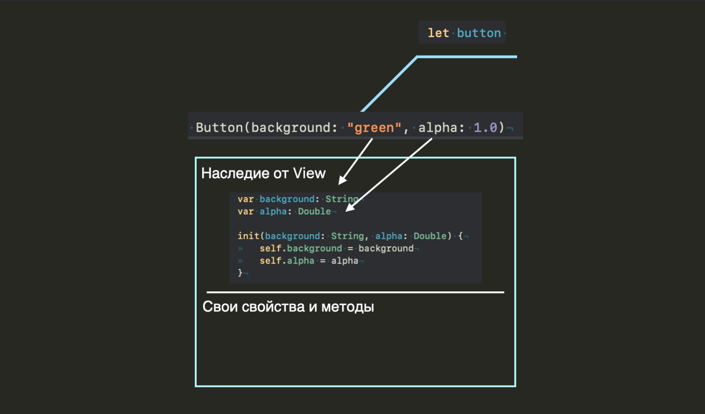

Урок 22. Наследование. Часть 1.
28 Апреля 2023

Загрузить материалы к уроку.
Наследование.
Класс обладает уникальной способностью наследовать свойства и методы других классов.
Давайте посмотрим на следующий пример:
Перед вами 4 элемента интерфейса, View это белый кран, Button это кнопка, Label – текст на экране. Вы можете заметить что внутри каждого из этих классов абсолютно одинаковый код, у каждого есть background – цвет фона, у каждого есть alpha – прозрачность объекта.
Как вы уже знаете, программисты ленивый народ, и им не очень хочется повторять каждый раз одни и те же действия. И вот в один из прекрасных дней им пришла в голову идея объединить общие свойства и методы всех этих элементов в один родительский класс. Таким образом, они могут наследовать эти свойства и методы и не повторять их каждый раз в каждом классе.
Синтаксис наследования выглядит следующим образом:
После имени класса, мы ставим двоеточие и следом тот класс, от которого хотим наследоваться
Класс от которого наследуемся называется – суперклассом, а тот кто наследуется – подклассом.

Давайте сделаем класс View родительским, то есть суперклассом, а все остальные подклассами, то есть наследниками:
Класс Button и Label унаследуют все что есть в классе View, все его свойства и методы, таким образом они нам будут доступны из коробки и мы можем спокойно к ним обращаться из экземпляра класса:
Не смотря на то что в данных классах не написано ни строчки кода, тем не менее у нас есть доступ ко всем свойствам класса View от которого мы унаследовались.
Наследование можно сравнить с семейными отношениями, где родители передают свои свойства и характеристики потомкам, например цвет глаз и предрасположенность к аллергии. Но как вы понимаете потомки могут так же иметь свои собственные характеристики, не унаследованные, например скверный характер.
То есть любой подкласс, может так же иметь и свои собственные свойства и методы:
И здесь важный момент, ребенок наследует все что есть у родителя, но родитель никогда не сможет унаследовать что то от ребенка. То есть класс View не знает что происходит в его дочерних классах, их личные свойства и методы ему не доступны:
Если вы создадите экземпляр класса View, и попытаетесь обратиться к его свойствам, вы увидите в списке только alpha и background, а свойства cornarRadius не будет, потому что оно имеет отношение только к классу Button.
Со всеми унаследованными от суперкласса свойствами вы можете работать как с родными, изменять их, использовать во внутренней логике.
Давайте добавим нашему супер классу вычисляемое свойство с описанием:
вычисляемое свойство description выводит на консоль сообщение, которое включает в себя значения свойств background и alpha.
А сейчас посмотрите на код ниже и ответьте на вопрос, что мы увидим на консоле, если обратимся к свойству description у кнопки?
Если вы ответили: background: whith and alpha: 1.0, то это будет не верным решением. Давайте разбираться. Выше было сказано, что наследование можно расценивать как копирование всего публичного что находится в родительском классе.
Когда создается класс для него выделяется определенное количество памяти. При этом в память загружаются все поля, методы и свойства, которые определены внутри этого класса.
Когда создается класс-наследник, то он получает все поля и методы, определенные в его родительском классе (базовом классе). Для этого в памяти выделяется дополнительное место для хранения всех наследованных членов базового класса.
Для понимания того как это все работает, можно представить класс наследник Button так:
В верхней части все свойства и методы, которые мы унаследовали у супер класса, в том числе и его пустой инициализатор, который мы не видим, но он нам дан по умолчанию, при создании экземпляра класса Button у нас выделилась дополнительная память для них. Конечно это грубое представление, того как это все размещается в памяти, но нам сейчас главное понимать как мы можем взаимодействовать с унаследованными свойствами и методами. таким образом когда мы меняем значения свойств background и alpha:
то description будет отображать новые значения: background: red and alpha: 0.5
Инициализатор у класса-наследника.
Думаю вы уже догадались что мы от супер класса так же наследуем и его инициализатор. В примерах выше, во всех классах, мы используем пустой инициализатор, так как все свойства инициализированы, и его по умолчанию можно не прописывать.
Давайте инициализируем свойства супер класса через инициализатор:
Обратите внимание что мы унаследовали от супер класса так же инициализатор. Для наглядности снова обратимся к нашей памяти:
Ответьте себе на вопрос, чему будут равны свойства alpha и background у кнопки:
button.background имеет значение “green”, а button.alpha значение 1.0
Button унаследует от View всё его содержимое в том числе и инициализатор. Но что если мы хотим создать в классе Button свой собственный инициализатор:
В таком случае у нас будет ошибка, прежде чем продолжить, подумайте почему она возникла.
Давайте разбираться.
Снова обратимся к наглядному примеру. Предположим мы попытаемся создать экземпляр класса button с его новым инициализатором:
В памяти мы увидим следующее:
Унаследованные нами свойства остались не инициализированными, потому что мы не можем вызвать два иниуиализатора сразу, но мы можем вызвать унаследованный инициализатор у супер класса:
Чтобы обратиться к инициализатору супер класса мы должны прописать super и вызвать нужный инициализатор, как вы знаете их может быть несколько в классе.
таким образом в момент создания экземпляра класса button мы вызовем инициализатор с cornerRadius и по цепочке зацепим инициализатор супер класса и инициализируем все свойства в супер классе.
Вы могли заметить, что значения для свойств супер класса будут заданы автоматически, всегда белый цвет с прозрачностью 1 и мы их не сможем поменять. Это не очень удобно и чаше всего мы бы хотели контролировать инициализацию этих свойств. В таком случае можно добавить параметры в инициализатор класса Button:
Теперь мы можем задавать значения для этих свойств в момент создания экземпляра класса.
Мы так же можем унаследоваться от этой кнопки и создать на ее основе кастомную кнопку:
Подумайте какой инициализатор нам будет доступен если мы заходим создать экземпляр этого класса?!
Нам будет доступен последний инициализатор в иерархии наследования, то есть тот который находится в Button:
в памяти такой экземпляр будет выглядеть следующим образом:

Подумайте как должен выглядеть инициализатор у класса CustomButton, если мы добавим ему одно свойство title:
Так как мы обязаны инициализировать все свойства всех своих унаследованых по цепочке классов, то мы обязаны вызвать инициализатор у супер класса:
А теперь давайте посмотрим какие значения будут у всех свойств нашего экземпляра customButton:
Обязательно разберитесь почему мы получили в результате такие данные.
Если в классе Button не будет личного инициализатора, в таком случае CustomButton воспользуется инициализатором класса View.
Обратите так же внимания что в инициализаторе мы должны сперва инициализировать все свойства подкласса, а потом уже свойства его супер класса.
Предлагаю на этом закончить урок, что бы закрепить полученные знания решением задач.